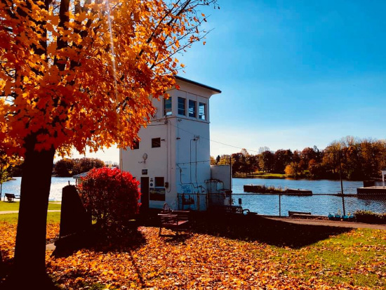

<meta charset = 'UTF-8'> 
<meta name="viewport" content="width=device-width, initial-scale=1.0">
<title> Jena Klimaszewski</title>
<style> 
    header {
    background-color: #ab91b8;
    padding: 1em;
    color: white;
    text-align: center;
  }
  nav a {
    color: white;
    text-decoration: none;
    margin: 0 15px;
    font-weight: bold;
  }
  nav a:hover {
    text-decoration: underline;
  }
</style>

<header>
    <h1>Jena Klimaszewski</h1>
    <nav>
      <a href="index.html">Home</a>
      <a href="mappingsoftware.html">ArcGIS Pro & QGIS</a>
      <a href="R.html">R</a>
      <a href="Python.html">Python</a>
      <a href="writingsamples.html">Writing Samples</a>
    </nav>
  </header>

<section style="max-width: 800px; margin: 2em auto; padding: 1em; background-color: white; border-radius: 10px; box-shadow: 0 2px 5px rgba(0,0,0,0.1);">
  <h2>About Me</h2>
  <p>
    My name is Jena Klimaszewski. I was born in Upstate New York, and am looking to relocate to the area after graduating this May. I am from Phoenix, NY, a small 
    canalside town. I completed my Bachelors degree at Clark University in Worcester, Massachusetts in May of 2024.  My undergraduate majors were Geography and 
    International Development.  Throughout my degree, I was able to learn a lot about urban planning theory, as well as effective ways to engage with diverse communities.  
    Currently, I am wrapping up my Masters degreee in Community Development and Planning at Clark. This program built on my existing skills, allowing me to use them at a higher level.
    Both of these programs allowed me to learn different ways of quantative analysis as well, including GIS. 
    After graduation, I am aspiring to be a community planner and am interested in building upon the existing strengths of towns and cities. I am a strong advocate for effective community
    engagment and participation. My core interests include creating affordable housing options, expanding public transit, and improving walkablity. 
  </p>

  <div style="display: flex; justify-content: space-around; flex-wrap: wrap; margin-top: 1em;">
    
    
  </div>
</section>

<!-- Resume Link -->
<section style="text-align: center; margin: 2em;">
  <a href="Resume.pdf" target="_blank" style="display: inline-block; padding: 10px 20px; background-color: #3f3f3f; color: white; text-decoration: none; border-radius: 5px; font-weight: bold;">
    View My Resume (PDF)
  </a>
</section>
